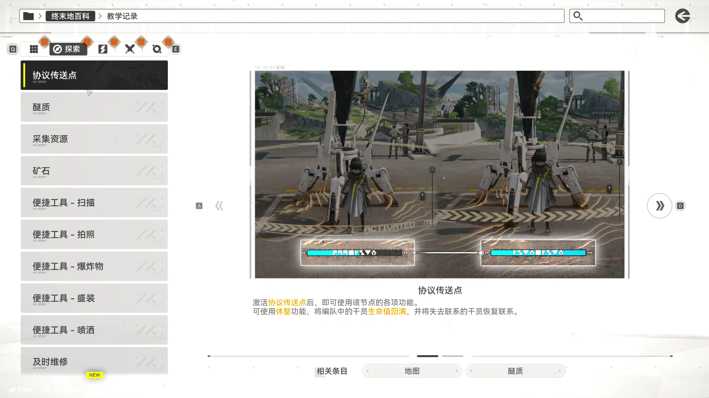
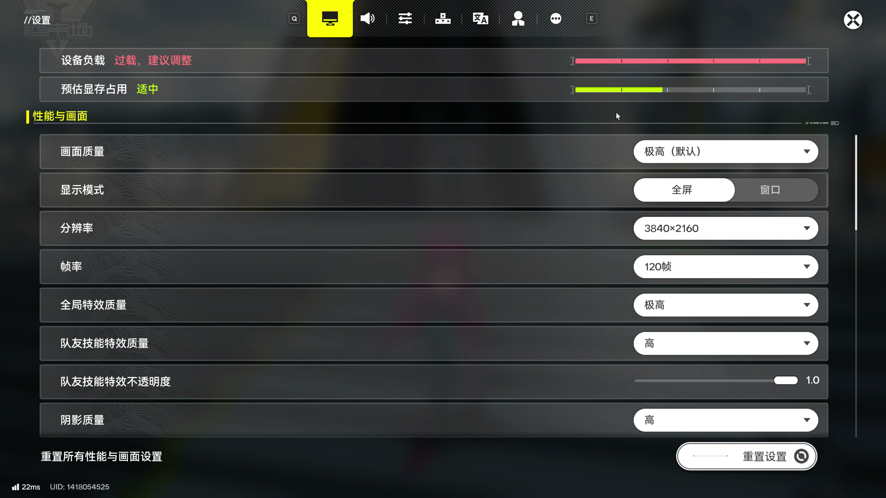

深色底纹，先对上游戏实图
来源是用户于 2026-08-27 录制的游戏界面，原帧均为 2560×1440。以下局部只改变浏览器里的取景范围，原图像素保持原样。
百科目录：等高线向文字侧淡出

设置条目：左右不同，中间留空

打开设置界面完整原帧 ↗。模糊场景透出的色彩与控件状态色，不作为代码区配色。
本次怎样移入代码区
保留中性深灰基底、局部连续等高线、渐隐点阵、安静的文字中段。它们各占自己的位置；不再用一层均匀斜纹代替整个表面。
代码仍自动换行，复制取得原始内容。新版只调整代码区底材；「纯色对照」和「上一版斜纹」都保留在预览里，方便直接比较。